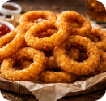

Acompanhamentos

JS Fries
const fries = Array(50).fill('🍟');
fries.forEach(f => me.eat(f));
console.log("Status: 200 OK (Satisfied)");

Nuggets++
Nuggets crispy = Nuggets::create(10);
crispy.dip(BarbecueSauce);
return crispy.isDelicious();

Onion.py
for ring in onion_rings:
me.consume(ring)
# Camadas de sabor otimizadas
Rust-ica
let batata = Rustica::new("Crocante");
match batata.flavor() {
Good => println!("Safe and Tasty!"),
}